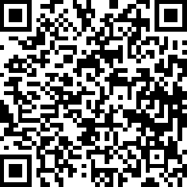
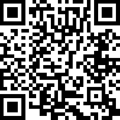

Rejillas, alineación, espaciado, jerarquía visual, ritmo y balance.
¿Alguna vez te has preguntado por qué puedes pasar tres horas deslizando videos en TikTok sin cansarte, pero te frustras a los dos minutos cuando intentas usar la página web de tu colegio? La respuesta no es solo el contenido; es el diseño de la interfaz. Las apps que más usas están diseñadas milimétricamente para guiar tus ojos, hacer la lectura cómoda y retener tu atención.
En la industria tecnológica actual, saber programar una aplicación es solo la mitad del trabajo. Las empresas buscan perfiles que comprendan la psicología detrás de la interacción humana con las pantallas. Si una aplicación carece de estructura visual, el usuario la abandona en segundos.
✨ Al terminar este módulo, analizaremos tus aplicaciones favoritas con un criterio técnico. Comprenderás la arquitectura invisible que sostiene a plataformas como Spotify, Instagram o YouTube, y serás capaz de construir interfaces en Figma utilizando las mismas reglas de composición visual que aplican los profesionales en la industria del software. 🚀🎥📊
Objetivos de aprendizaje
- 🔍 Identificar la estructura geométrica (rejillas y alineación) en aplicaciones de uso diario mediante el análisis visual de sus pantallas.
- 🎨 Aplicar los principios de espaciado y jerarquía visual en Figma para organizar información de manera clara y legible.
- 📱 Construir la interfaz de una aplicación utilizando patrones de ritmo y balance visual que generen estabilidad.
- 🗣️ Evaluar críticamente los diseños propios y de los compañeros justificando las decisiones con base en los seis principios estudiados.
Diseño de Interfaz: Fundamentos Visuales
Para construir cualquier producto digital estable, se requiere una base visual sólida. Exploraremos los principios que sostienen cualquier interfaz intuitiva.
Rejillas (Grids)
Es como el organizador de cubiertos de una cocina: clasifica y contiene cada elemento en un espacio delimitado para establecer un orden lógico y predecible.
Definición: Systema estructural de líneas verticales y horizontales que divide la pantalla en columnas y filas.
Ejemplo — Instagram: La rejilla de 3 columnas restringe las dimensiones de las fotografías. Todo el contenido se ajusta a esos bloques exactos, creando un mosaico simétrico.
Posicionar elementos en el lienzo sin una restricción matemática, generando un diseño desestructurado.
Utiliza sistemas basados en múltiplos de 8 (8px, 16px, 24px) para garantizar proporciones exactas en cualquier tamaño de pantalla.
Alineación
La alineación es la colocación de elementos visuales a lo largo de un eje o línea de referencia común.
Es idéntico a usar una regla o el borde de una baldosa para garantizar que una fila de personas quede perfectamente recta.
Ejemplo — WhatsApp:
En la lista de chats, los nombres están alineados a la izquierda y las horas tienen alineación derecha. Esta separación de ejes acelera la velocidad de lectura.
Aplicar alineación central a bloques de texto extensos, lo cual incrementa la fatiga visual del usuario.
Ante la duda, alinea los textos a la izquierda; es la dirección natural de lectura en occidente y reduce la carga cognitiva.
Espaciado
El espaciado (o espacio negativo) es la distancia matemática entre los elementos de la interfaz. La proximidad indica relación.
Funciona como las pausas en el lenguaje hablado: sin espacios prolongados entre distintas ideas, el mensaje se vuelve incomprensible.
Ejemplo — Spotify:
En "Tu biblioteca", la distancia entre portada y título es mínima (mismo grupo), mientras que el espacio antes del siguiente álbum es considerablemente mayor.
Reducir los márgenes al mínimo para forzar más contenido en la pantalla, generando saturación visual.
El espacio en blanco es un elemento activo del diseño; utilízalo intencionalmente para agrupar o separar funciones.
Jerarquía Visual
La jerarquía visual determina el orden de importancia de los elementos mediante el contraste de tamaño, color o grosor tipográfico.
Es el equivalente a la estructura de un periódico: el titular captura la atención primero, seguido del subtítulo y finalmente el cuerpo de la noticia.
Ejemplo — YouTube:
El título del video usa mayor tamaño y peso (negrita). El nombre del canal tiene tamaño menor y color secundario (gris), dictando un recorrido visual estricto.
Aumentar el tamaño y aplicar colores saturados a todos los elementos simultáneamente.
Define un único elemento principal por pantalla; si múltiples elementos compiten por el nivel máximo de atención, el usuario se desorienta.
Ritmo Visual
El ritmo visual es la repetición controlada de elementos, espacios o patrones para guiar el movimiento del ojo de forma predecible.
En la música, un compás constante permite anticipar la siguiente nota; en el diseño, un patrón repetitivo permite consumir el contenido de manera rápida y sin fricción cognitiva.
Ejemplo — X (antes Twitter):
El ritmo es invariable: Avatar → nombre → bloque de texto → iconos. Esta repetición sistemática facilita la asimilación rápida de múltiples publicaciones.
Alterar dimensiones o ubicación de componentes que cumplen la misma función dentro de una lista.
Convierte los bloques repetitivos en "Componentes" dentro de Figma para asegurar dimensiones idénticas y actualizaciones globales automáticas.
Balance
El balance es la distribución equilibrada del peso visual (tamaño, color o densidad tipográfica) a lo largo de la interfaz.
Un subibaja: una masa densa en un extremo requiere contrapeso en el opuesto para mantener la estabilidad del sistema.
Ejemplo — Netflix:
La zona superior presenta un póster de gran tamaño (alto peso visual). La zona inferior despliega múltiples filas de elementos más pequeños, contrarrestando matemáticamente el bloque superior.
Agrupar todos los botones de acción principal y tipografías pesadas en un solo cuadrante, desestabilizando el centro de gravedad de la pantalla.
Aleja la vista y entrecierra los ojos. Si percibes una concentración desproporcionada de elementos oscuros en un sector, la composición carece de balance.
Actividad práctica
Actividad 1. Clasificador de Principios de Diseño
Arrastra cada concepto hacia la categoría que mejor lo describa según su función en la interfaz (Base Estructural o Composición Visual).
Toma un elemento y arrástralo 👉
🏗️ Base Estructural
✨ Composición Visual
Actividad 2. Desafío de Consistencia Visual
Analiza las dos opciones y selecciona la que aplique mejor los principios de diseño.
Instrucción del nivel
Evaluación. Preguntas de selección múltiple (marca la respuesta correcta)
Comprueba lo que has aprendido. Selecciona la respuesta correcta para cada pregunta.
Recursos para profundizar
Para ampliar tu conocimiento sobre ecuaciones y desigualdades, te recomendamos explorar los siguientes enlaces y documentos:
-
El curso de figma más corto del mundo
Ir al recurso
-
Type Scale: Calculadora tipográfica
Ir al recurso